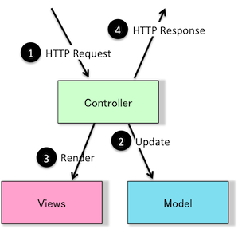
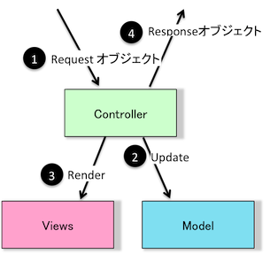

CreamyアプリケーションはWebに適用されたMVCアーキテクチャパターンに従います。
このパターンはアプリケーションを別々の層: プレゼンテーション層とモデル層に分割します。プレゼンテーション層 はさらにビュー層コントローラ層に分けられます。
モデルはアプリケーションが扱う情報をドメインに特化して表現したものです。
また、ほどんどのアプリケーションが、データを保存するためにデータベースなどの永続的なストレージを使用します。モデルでは、このデータベースなどへのデータアクセス層を隠蔽/カプセル化します。
Creamyでのモデルの扱いはWebアプリケーションフレームワークのそれと変わりはありません。 ほとんどのアプリケーションでは、ドメインに特化したビジネスロジックの記述とデータベースへのマッピング(データ アクセス層の隠蔽/カプセル化)に使用します。
ビューの通常の役割は、ユーザインタフェースにあたるScene Graphをレンダリングすることです。
典型的にはWebアプリケーションでは、HTMLがレンダリングされますが、CreamyではFXMLがこれにあたります。
コントローラは、イベント(通常はユーザのアクション)に反応してそれらを処理します。
場合によっては、下層のモデルに変更を適用し、レスポンスを返却します。
Webアプリケーションでは、通常、イベントはHTTPリクエストです。
Creamyでは、Requestクラスとそのインスタンスがあたります。CreamyのBrowser上で特定のコントロール(Hyperlink、Submitボタンなど)に対する アクションがあると、イベントとして(Requestインスタンスが生成され)、コントローラに通知されます。
ここで、WebアプリケーションとCreamyを比較して整理しておきましょう。
| Webアプリケーション | Creamyアプリケーション |
|  |  |
見て分かる通り、MVCの役割はWebアプリケーションとCreamyで変わりはありません。
違いはHTTPリクエスト/HTTPレスポンスが、CreamyではJavaオブジェクトとなっていることだけです。